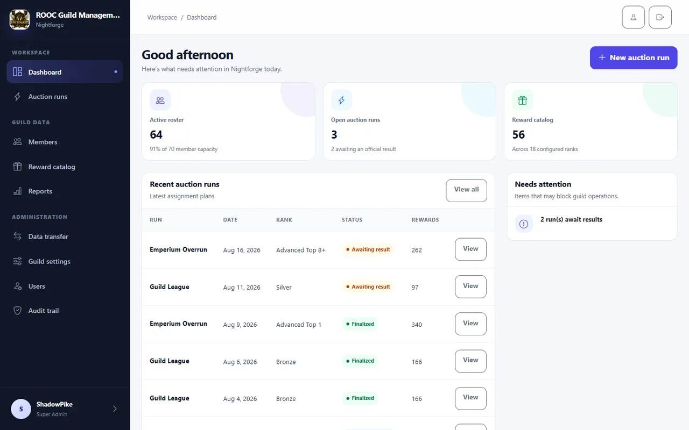

Automate
Replace repetitive manual workflows with jobs that run on their own.
See it in practiceOpen to scoped builds & ongoing support
John Berlyn Isip · Senior Full-Stack Developer & Automation Engineer
I automate workflows, connect the systems you already use, and build the internal tools off-the-shelf software can’t. Shipping production software since 2013.
Production work for
01 / What I deliver
Replace repetitive manual workflows with jobs that run on their own.
See it in practiceConnect the systems you already use so data moves without copy and paste.
See it in practiceCustom internal tools around your business rules, on web, desktop, or mobile.
See it in practice02 / How a project runs
Talk to the people doing the work. Map the rules and the exceptions.
Pick the fit: a workflow, an integration, or a custom app.
Test the business rules, document the system, release.
Maintenance is part of the job, not an afterthought.
AI-assisted, with accountability. Codex, Claude Code, and GitHub Copilot support development. I review the code, validate the behavior, and own the result.
03 / Selected work
01NGCP · Current work
Process improvement, compliance, and reporting workflows delivered as modules on one Django platform.
02Business apps · Cross-platform
One Flutter codebase on Windows and Android, with a local-first data layer built for sync.
03NGCP · Energy operations
Operations and market interface teams run their five-minute interval checks from the same dashboard.
04NGCP · Systems integration
A shared Active Directory identity for existing apps and new internal tools, adopted one app at a time.
05 / Independent project
Rosters, loot auctions, and rewards for a game guild. Designed and built by me, from the workflow to deployment.

04 / Career
Energy, government, property, healthcare, and investigation software. In-house in the Philippines, remote for Australia and the US.
Or walk it as a side-scroller, built with no libraries.
Jul 2024 - Present
National Grid Corporation of the Philippines
Oct 2023 - Apr 2024
Realtair, Inc. (Remote)
Feb 2023 - Sep 2023
GoTeam / Comtrac (Remote)
Sep 2022 - Feb 2023
Theoria Medical (Remote, USA)
Jan 2016 - Sep 2022
National Grid Corporation of the Philippines
2013 - 2015
Teradata, Commission on Audit, NGCP
Walk with ← / → or A / D, jump with W / Space, or tap a station. Visit every station, jump into the ⚙ blocks, and reach the gate to ship.
05 / Stack
A broad production background, so I can work with the systems you already run.
Current work
Production experience
Working knowledge
06 / About
I’m JB, based in Quezon City. I like learning how a business runs, then making the hard or repetitive part of someone’s day easier. I’ve led enterprise projects, contributed to architecture, and mentored junior and mid-level developers.
Outside software, I serve as a youth pastor at Come to Jesus Church Montalban and consult for GFMIC, Inc.
Get in touch
What’s still being done by hand? Tell me about the process, the systems involved, and where your team gets stuck. A scoped build or ongoing senior support.